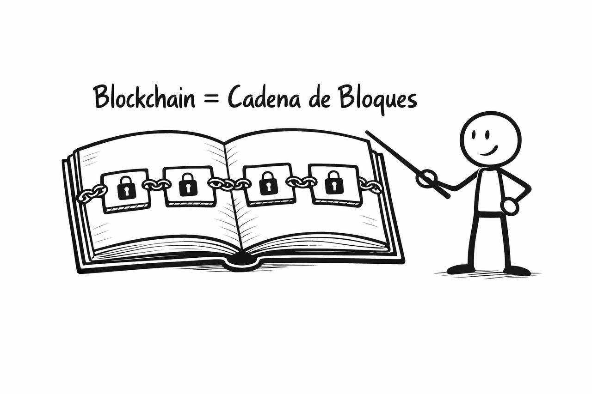
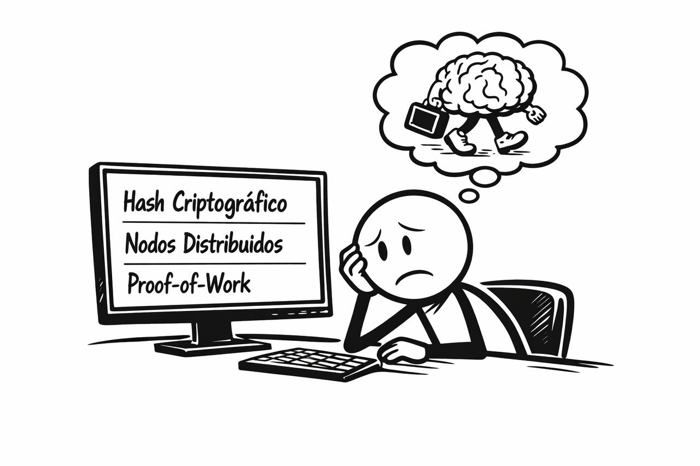
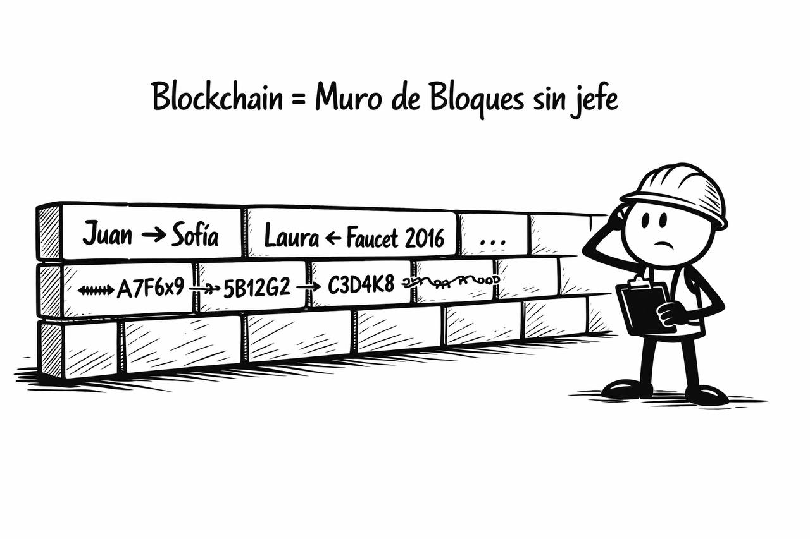
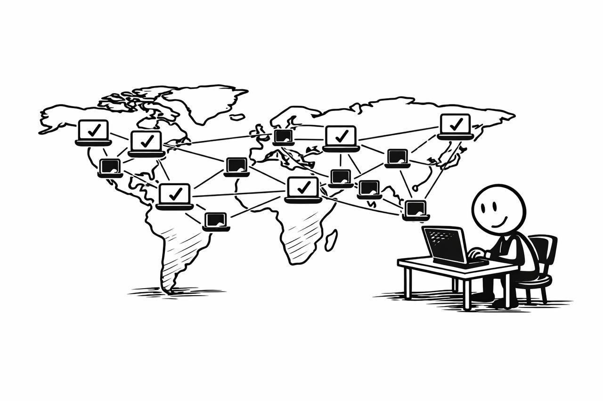

¿Qué es Blockchain?
Introducción
Definición sencilla y compacta la palabra blockchain viene del idioma inglés y está formada por dos palabras. La primera palabra es Block que en español significa Bloque. La segunda palabra es Chain y en español significa Cadena. Así que cuando traducimos Blockchain al español sería así: Cadena de Bloques.
Entonces una Blockchain (Cadena de Bloques) es una tecnología que funciona como un libro de cuentas digital, donde cada transacción se guarda en bloques enlazados entre sí, formando una cadena segura e inmutable que todos pueden consultar pero nadie puede alterar.

Si con eso ya tienes una idea clara, perfecto. Pero si quieres entender cómo funciona realmente, por qué no depende de un solo guardián, y qué papel juegan los mineros, validadores y exploradores en todo esto, te invito a seguir leyendo el resto del tutorial.
Capítulo 1: El día en que mi cerebro quiso renunciar
Les juro que no fue culpa mía. Yo solo quería entender cómo funcionaba Bitcoin. Ya sabes, por cultura general, para no parecer un cavernícola digital. Pero cada vez que abría un video o un artículo, aparecían términos como hash criptográfico, nodos distribuidos, minería proof-of-work... y mi cerebro, que es muy trabajador pero también algo temperamental, simplemente decía:
"Listo, me voy. Que lo entienda otro."

Pero yo insistí. Porque si algo aprendí del mundo cripto es que no todo es tan complicado como parece... solo está mal contado. Así que me senté, agarré una hoja en blanco y me propuse descifrar esto de blockchain con algo que sí pudiera entender: bloques de construcción. Literal. Como los de jugar.
Capítulo 2: Imagínate un muro... pero sin albañil jefe
Piensa en un muro de bloques. Uno bien largo, ordenado, donde cada bloque lleva escrita una historia. Ese primer bloque dice: "Juan le mandó 1 Bitcoin a Sofía." El segundo agrega: "Laura recibió 0.5 Bitcoin de un faucet en 2016." Y así. Cada bloque contiene información sobre una transferencia monetaria y está pegado al bloque anterior de forma matemática, como si tuvieran un código secreto que los mantiene unidos.
Ahora, imagina que no hay un solo albañil construyendo esta pared, sino miles, millones. Todos tienen una copia exacta del muro completo. Si uno quiere agregar un nuevo bloque, los demás primero revisan que esté bien, que no tenga trampa, que no contradiga ningún bloque anterior. Y solo si todos están de acuerdo... el bloque se agrega. Ni antes, ni después.
Eso es blockchain: una base de datos compartida, donde cada bloque guarda información y donde la seguridad se basa en el consenso de muchos, no en la autoridad de uno. Es decir Blockchain es una Cadena de Bloques de información o como más me gusta son Bloques que contienen información que están encadenados (unidos) entre sí.

Cuando hablamos de una "red blockchain", nos referimos a una comunidad global formada por millones de computadoras distribuidas por todo el planeta. Algunas de estas computadoras pertenecen a usuarios comunes, como tú y como yo, que participan voluntariamente para mantener la red; otras son propiedad de instituciones particulares que también colaboran en la validación y seguridad del sistema.
Esta red no es un solo servidor ni una entidad central, sino un sistema interconectado y descentralizado donde cada nodo tiene una copia del libro de cuentas digital. Todos trabajan juntos para verificar que las transacciones sean legítimas y que nadie pueda hacer trampa, garantizando así la confianza sin depender de un único guardián.

Capítulo 3: ¿Por qué esto importa más que tu app preferida de entregas a domicilio?
Porque antes, toda transferencia monetaria importante tenía un guardián: un banco, un gobierno, una empresa que nos decía si podíamos confiar. Y ahora, gracias a la blockchain, la confianza se escribe en código de programación y se almacena en miles de millones de computadoras conectadas. No porque sean perfectas. Sino porque si una miente, las otras la ignoran.
Es un sistema inmune a trampas, donde los incentivos están diseñados para premiar a quienes juegan limpio. Y eso, en un mundo de estafas con trajes caros, suena casi utópico pero por suerte es real.
Capítulo 4: ¿Quién hace esos bloques? (La magia de los mineros y validadores)
Hasta ahora, ya entendimos que blockchain es como una pared infinita de bloques llenos de información. Pero… ¿quién los pone ahí? ¿Quién decide qué historia es digna de un nuevo bloque?
Spoiler: no hay un albañil jefe, pero sí hay miles de millones de obreros voluntarios repartidos por el mundo, compitiendo o colaborando para ganarse el honor (y una recompensa digital) de colocar el siguiente bloque.
A estos obreros les dicen "mineros" si hablamos de blockchains como Bitcoin, o "validadores" si hablamos de otras redes blockchain como Ethereum (versión moderna).
Los mineros trabajan con computadoras potentes que resuelven acertijos matemáticos absurdamente difíciles. ¿Por qué? Porque resolver ese acertijo demuestra que hicieron el esfuerzo (lo que en lenguaje cripto se llama proof-of-work (prueba-de-trabajo)). Y el primero en resolverlo, gana: se gana el derecho a poner el siguiente bloque… y a recibir una pequeña recompensa en bitcoins nuevecitos, recién horneados por la red.
En cambio, en otros sistemas como Ethereum más reciente, no se resuelve ningún acertijo. Ahí no se les dice mineros sino validadores. Los validadores son usuarios que demuestran compromiso bloqueando parte de su dinero digital como garantía (proof-of-stake(prueba-de-bloqueo)). Cuanto más confían (y más bloquean), más chances tienen de ser elegidos aleatoriamente para validar un nuevo bloque. Si lo hacen bien, ganan. Si hacen trampa, pierden esa garantía. Sencillo y elegante.
- En Bitcoin, los bloques se "pican" como en una mina.
- En Ethereum, se "apuestan" como en una mesa de confianza.
En ambos casos, los bloques no se crean por capricho ni magia, sino como resultado de un proceso informático-matemático que asegura que todo sea justo, transparente y sin intermediarios sospechosos.
Capítulo 5: ¿Y qué pasa si quiero mirar el muro? (Exploradores de bloques)
Hasta ahora, ya sabes que existe un gran muro de bloques (blockchain), lleno de transacciones, bien organizadito y validado por miles de millones de personas. Pero… ¿cómo sé que todo eso es real? ¿Cómo puedo mirar con mis propios ojos qué hay en cada bloque?
Fácil: con un explorador de bloques.
Pensemos en este muro como un museo. Gigante. Cada bloque es una vitrina con información y cada transacción o transferencia monetaria es una pequeña obra con su historia. El explorador de bloques es como una linterna + lupa + guía turístico digital. Tú entras, escribes una dirección (por ejemplo, tu billetera), y el explorador te muestra:
- Cuántos bloques se han creado hasta ahora
- Qué transacciones están en cada bloque
- Cuándo ocurrieron
- Qué billeteras participaron
- Cuánto se movió y hacia dónde
Todo transparente, público y sin intermediarios. Tú puedes ver en tiempo real si una transacción fue confirmada, cuánto pagaste de comisión, o incluso si alguien movió una fortuna en criptomonedas desde una dirección misteriosa.
Los exploradores más famosos se llaman cosas como Blockchain.com, Etherscan.io, o Solscan.io, según la red blockchain en la que quieras buscar.
Capítulo 6: No es una sola red blockchain... es un barrio entero (¡y cada red tiene su estilo!)
Una vez que entiendes cómo se construye el muro llamado blockchain, puede que tu cerebro ingenuo —como el mío— piense:
"Listo, ya entendí. Hay UNA red blockchain universal donde viven todas las criptomonedas."
Bueno… spoiler: no señor.
En realidad, cada red blockchain es como su propio barrio digital, con su identidad, vecinos, reglas y hasta su propio estilo arquitectónico.
Este es un barrio minimalista. Tiene una sola avenida principal: enviar y recibir bitcoins. Nada de apps, contratos, ni adornos. Todo es sobrio, seguro, y lento como un abuelo que cruza la calle con dignidad. Pero nadie se mete con él. Porque funciona. Y porque fue el primero en construir su muro.
Acá todo es más caótico pero mucho más vivo. Ethereum no es solo una red donde vive Ether, su moneda principal. También es un rascacielos lleno de aplicaciones descentralizadas, contratos inteligentes y miles de tokens que alquilan espacio en el edificio. Es la gran metrópolis del mundo cripto.
Cada uno con su onda. Solana es como una empresa emergente hiperactiva: quiere velocidad, baja comisión y escalabilidad, aunque a veces se apaga la luz. BNB Chain (de Binance) tiene un aire de ciudad planificada con centro comercial incluido. Polygon, por su parte, actúa como el puente que conecta a Ethereum con barrios más livianos.
Y esto no es loquísimo solo por la variedad. Es clave para entender por qué una wallet que usas en una red blockchain puede no servir en otra, o por qué un token que ves en Solana no existe en Ethereum.
Así que no, no es una sola red blockchain. Es un archipiélago digital lleno de islas con su propia cultura, moneda y ritmo. Y tu, como explorador de este nuevo mundo, puedes moverte entre ellas... siempre que sepas cómo navegar sus mapas.
Capítulo 7: Lo bueno, lo malo y lo delirantemente genial del blockchain
A esta altura, uno podría pensar que blockchain es lo mejor desde que inventaron el pan con ajo. Pero como todo en la vida (y más aún en el mundo cripto), hay capas, matices y alguna que otra espina tecnológica escondida.
- Transparencia total: Cada transacción queda registrada. Tú puedes ver, revisar y auditar sin pedirle permiso a nadie.
- Sin intermediarios: No hay que confiar en bancos, empresas ni gobiernos. Solo en el código.
- Acceso global: Cualquiera con internet puede participar. No importa si estás en Japón o Helsinki.
- Complejidad técnica: Para muchas personas, entender blockchain es como leer jeroglíficos en modo oscuro.
- Escalabilidad y velocidad: Algunas redes todavía son lentas o se congestionan cuando todos quieren jugar al mismo tiempo.
- Consumo energético: Blockchains como Bitcoin requieren muchísima energía.
Capítulo 8: ¿Y no se puede hackear todo esto? (Spoiler: casi nunca)
A ver. Entiendo tu sospecha. Yo también he visto mil veces películas donde un nerd con capucha hackea bancos en 30 segundos mientras toma un refresco frío.
Pero blockchain no funciona como las cosas tradicionales de internet. Y por eso, hackearla es como tratar de cambiar una baldosa de una plaza... mientras millones de cámaras te están grabando. Y cada cámara tiene una copia exacta del diseño original.
- Cada bloque tiene un código único llamado hash, como una huella digital.
- Ese hash depende del contenido del bloque anterior.
- Si alguien intenta modificar un bloque, se rompe toda la secuencia: el hash cambia y los bloques siguientes ya no encajan.
- Cada nodo tiene su propia copia de la cadena entera. Si una copia intenta hacer trampa, las otras la ignoran.
Para hackear una blockchain, tendrías que convencer a más del 51% de todos los nodos del planeta de mentir al mismo tiempo. A eso se le llama un ataque del 51%, y lograrlo hoy en redes grandes como Bitcoin o Ethereum es, básicamente, ciencia ficción.
Existe una amenaza teórica: las computadoras cuánticas. Pero toda la industria cripto ya está investigando algoritmos post-cuánticos. O sea: el paraguas se está abriendo antes de que llueva.
¿Entonces me puedo quedar tranquilo?
Mientras uses redes blockchain grandes, mantengas tus claves privadas bien guardadas y no caigas en estafas de humanos (porque sí, lo más hackeable sigue siendo el usuario, no el sistema)... puedes dormir tranquilo. El muro está firme.
Epílogo: No es tecnología, es filosofía digital
Después de recorrer bloques, muros, exploradores, mineros y hasta amenazas cuánticas, uno puede pensar que blockchain es solo una proeza técnica. Pero en el fondo, esto va mucho más allá de los cables, los códigos y los gráficos de velitas.
Blockchain es una idea. Una forma distinta de confiar.
Durante siglos, pusimos la confianza en estructuras verticales: el rey, el banco, la empresa, el "experto". Creíamos porque no nos quedaba otra. Hoy, blockchain nos propone algo radical: confiar en un sistema donde nadie manda, pero todos deciden.
Sí, hay ruido, estafas, errores humanos y promesas exageradas. Como en cualquier revolución. Pero también hay algo hermoso: la posibilidad de que cada persona pueda ser su propio banco, su propio notario, su propio testigo. No por desconfianza, sino por diseño.
Así que la próxima vez que escuches "blockchain", no lo pienses solo como una tecnología. Piénsalo como una semilla: una que puede crecer en billeteras, contratos, arte digital, gobernanza… y también en tu cabeza.
Porque si entendiste esto sin que te explote el cerebro, entonces estás listo para el siguiente bloque.
🧠 Rincón del Hunter
"Cuando entendemos blockchain sin que nos explote la cabeza, no solo ganamos conocimiento: recuperamos el derecho a confiar sin pedir permiso. Porque hay muros que no se levantan para ocultar, sino para que todos podamos mirar."